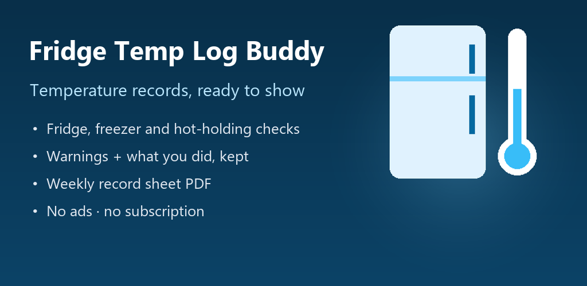
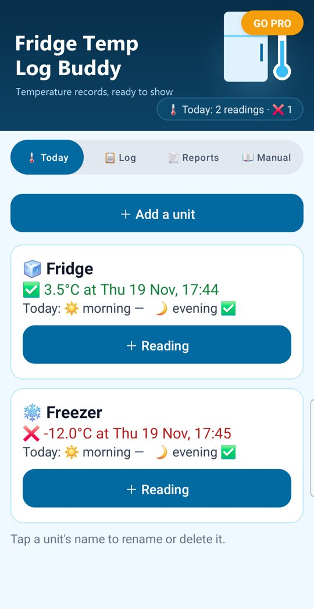
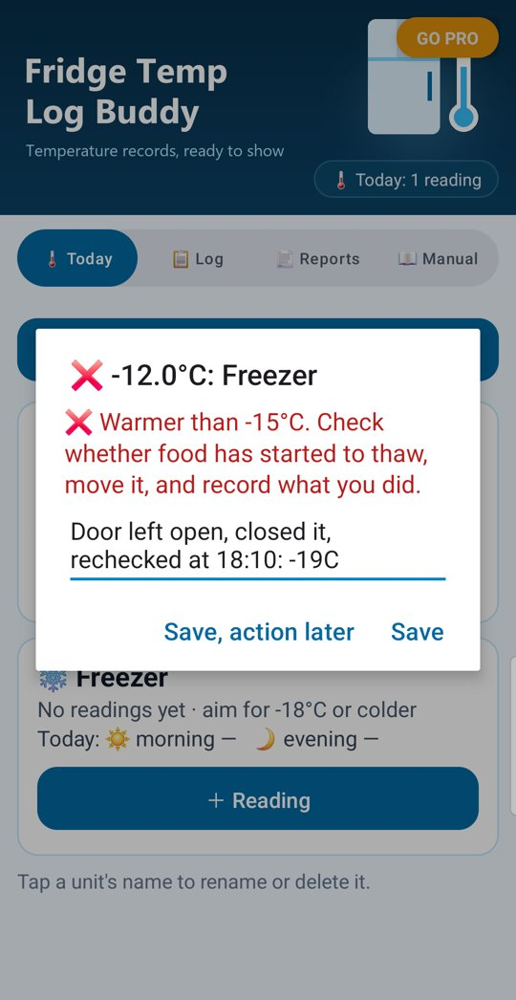
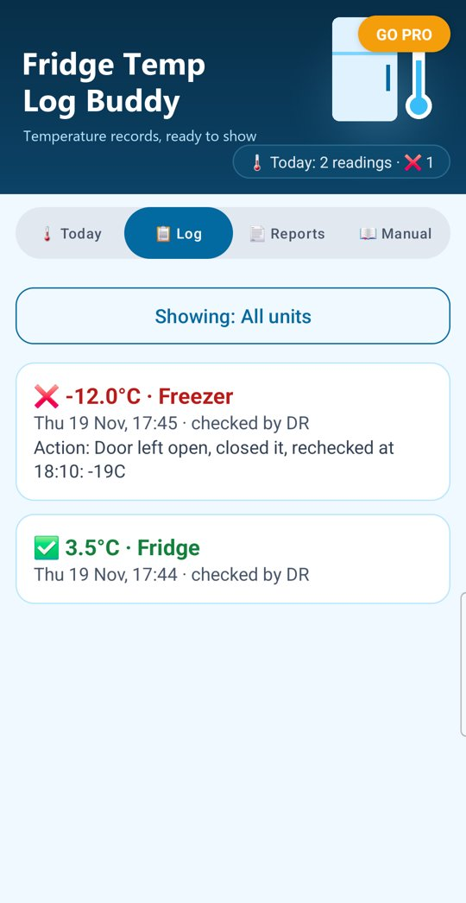
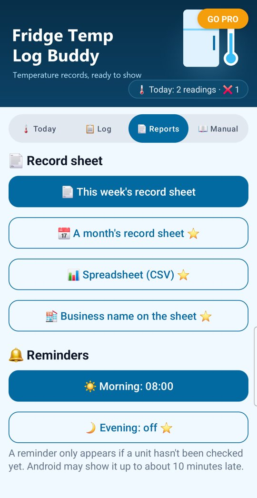

Everything below is the same text as the Manual in the app (📖 Manual tab).
Fridge Temp Log Buddy is a record book for the temperatures of your fridges, freezers and hot-holding units. You read each unit's own thermometer, type the temperature in, and the app keeps a dated record with who checked, warns you when a reading is out of range and keeps what you did about it. The record sheet PDF can be printed or shown to an inspector.
A phone can't measure a fridge's temperature: the readings are the ones you enter from a thermometer.
Add each unit once (🌡️ Today › ＋ Add a unit): a name (for example "Display fridge") and what it is:
Tap a unit's name to rename it or delete it with its readings.
Tap ＋ Reading on a unit, type the temperature from its thermometer (for example 3.5, or -19 for a freezer) and your initials. A note is optional. The time is taken from the phone.
Each unit shows today's checks: ☀️ morning (before 12:00) and 🌙 evening (12:00 or later), ✅ when done.
The reading is marked:
For ⚠️ and ❌ the app asks what you did (for example "moved food to the back fridge, rechecked at 11:30: 4°C"). It's kept with the reading and printed on the record sheet. If you tap Save, action later, add it afterwards: tap the reading in 📋 Log › ✏️ Add what you did.
The 📋 Log tab lists every reading, newest first, with its status, who checked and any action. Choose a unit at the top to see only its readings. Tap a reading to add or change what you did (for ⚠️ and ❌ readings), or to delete a mistake.
In 📄 Reports, switch on the ☀️ morning reminder (free) and the 🌙 evening reminder (Pro) and choose the times. The morning reminder is set before 12:00 and the evening one from 12:00, to match the morning and evening checks. Android may show a reminder up to about 10 minutes late to save battery. If every unit has already been checked, no reminder is shown. Android may ask you to allow notifications.
If Android blocks the app's notifications, 📄 Reports shows 🔕 Notifications are blocked: tap it to allow them.
📄 Reports › 📄 This week's record sheet makes a PDF table: each day, each unit's morning and evening readings, who checked, and any action taken (free). ⭐ Pro makes the sheet for any month, adds your business name at the top, and makes a spreadsheet (CSV).
Keep the records as long as your local food safety guidance asks.
Free: 2 units, every reading with its warning and action, the morning reminder and this week's record sheet. No ads.
Pro (one payment, no subscription): unlimited units, the evening reminder, monthly record sheets with your business name, and the spreadsheet.
Tap GO PRO at the top. Restore purchase gets Pro back on a new phone with the same Google account.
No account, no sign-in, and no ads. Your units, readings and settings are kept only in the app's own storage on this phone. Fridge Temp Log Buddy has no servers. A PDF or spreadsheet only leaves the phone when you share it yourself.
Google Play handles the Pro purchase.
Fridge Temp Log Buddy v1.1 (Build 2)
Publisher: AppStack Studio
| Question | Many kitchen record apps | Fridge Temp Log Buddy |
|---|---|---|
| Price | Monthly subscriptions for a whole food-safety system | Free for 2 units; Pro is one payment for life (no subscription) |
| Sign-up | Accounts, logins, staff seats | No account: open it and take a reading |
| Ads? | Some have ads | No ads, ever |

1. Today
Each unit's last reading and today's morning and evening checks.

2. Out of range
What to check, and what you did is kept with the reading.

3. Log
Every reading with who checked and any action.

4. Reports
Record sheet PDF, spreadsheet and reminders.
Screenshots: Fridge Temp Log Buddy 1.0 on a Samsung Galaxy S24.